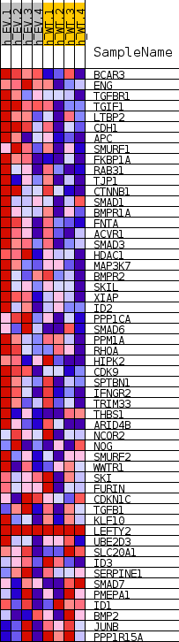
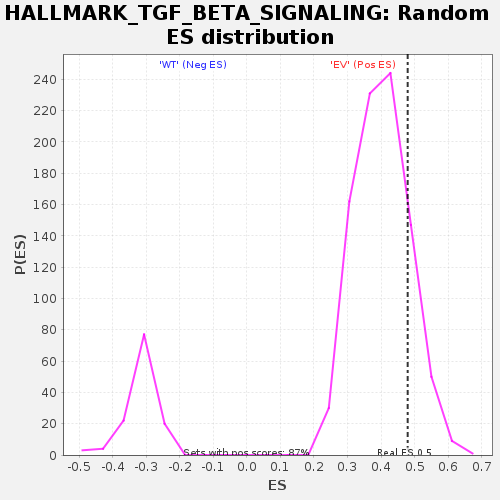

| | | Dataset | EV_WT_express.EV_WT.cls#EV_versus_WT |
| Phenotype | EV_WT.cls#EV_versus_WT |
| Upregulated in class | EV |
| GeneSet | HALLMARK_TGF_BETA_SIGNALING |
| Enrichment Score (ES) | 0.47941136 |
| Normalized Enrichment Score (NES) | 1.1939676 |
| Nominal p-value | 0.1659039 |
| FDR q-value | 0.3209354 |
| FWER p-Value | 0.995 |
Table: GSEA Results Summary
 Fig 1: Enrichment plot: HALLMARK_TGF_BETA_SIGNALING
Fig 1: Enrichment plot: HALLMARK_TGF_BETA_SIGNALING
Profile of the Running ES Score & Positions of GeneSet Members on the Rank Ordered List
| SYMBOL | TITLE | RANK IN GENE LIST | RANK METRIC SCORE | RUNNING ES | CORE ENRICHMENT | | 1 | BCAR3 | NNN | 1670 | 0.726 | 0.0363 | Yes |
| 2 | ENG | NNN | 1962 | 0.684 | 0.0922 | Yes |
| 3 | TGFBR1 | NNN | 4682 | 0.494 | 0.0899 | Yes |
| 4 | TGIF1 | NNN | 4745 | 0.490 | 0.1325 | Yes |
| 5 | LTBP2 | NNN | 6144 | 0.436 | 0.1475 | Yes |
| 6 | CDH1 | NNN | 6229 | 0.433 | 0.1846 | Yes |
| 7 | APC | NNN | 8355 | 0.372 | 0.1815 | Yes |
| 8 | SMURF1 | NNN | 11216 | 0.335 | 0.1626 | Yes |
| 9 | FKBP1A | NNN | 12630 | 0.294 | 0.1648 | Yes |
| 10 | RAB31 | NNN | 12975 | 0.284 | 0.1842 | Yes |
| 11 | TJP1 | NNN | 13609 | 0.267 | 0.1973 | Yes |
| 12 | CTNNB1 | NNN | 13614 | 0.267 | 0.2210 | Yes |
| 13 | SMAD1 | NNN | 13895 | 0.260 | 0.2394 | Yes |
| 14 | BMPR1A | NNN | 14658 | 0.243 | 0.2481 | Yes |
| 15 | FNTA | NNN | 15378 | 0.231 | 0.2564 | Yes |
| 16 | ACVR1 | NNN | 15721 | 0.223 | 0.2704 | Yes |
| 17 | SMAD3 | NNN | 15748 | 0.222 | 0.2898 | Yes |
| 18 | HDAC1 | NNN | 15828 | 0.220 | 0.3080 | Yes |
| 19 | MAP3K7 | NNN | 15846 | 0.220 | 0.3273 | Yes |
| 20 | BMPR2 | NNN | 16042 | 0.215 | 0.3431 | Yes |
| 21 | SKIL | NNN | 16214 | 0.212 | 0.3590 | Yes |
| 22 | XIAP | NNN | 16891 | 0.197 | 0.3651 | Yes |
| 23 | ID2 | NNN | 17261 | 0.188 | 0.3756 | Yes |
| 24 | PPP1CA | NNN | 17750 | 0.176 | 0.3830 | Yes |
| 25 | SMAD6 | NNN | 18131 | 0.167 | 0.3914 | Yes |
| 26 | PPM1A | NNN | 18892 | 0.157 | 0.3924 | Yes |
| 27 | RHOA | NNN | 19020 | 0.154 | 0.4040 | Yes |
| 28 | HIPK2 | NNN | 19027 | 0.154 | 0.4177 | Yes |
| 29 | CDK9 | NNN | 19092 | 0.153 | 0.4302 | Yes |
| 30 | SPTBN1 | NNN | 19207 | 0.150 | 0.4416 | Yes |
| 31 | IFNGR2 | NNN | 19251 | 0.149 | 0.4542 | Yes |
| 32 | TRIM33 | NNN | 19281 | 0.149 | 0.4670 | Yes |
| 33 | THBS1 | NNN | 19756 | 0.139 | 0.4713 | Yes |
| 34 | ARID4B | NNN | 20356 | 0.126 | 0.4723 | Yes |
| 35 | NCOR2 | NNN | 20705 | 0.119 | 0.4769 | Yes |
| 36 | NOG | NNN | 21127 | 0.108 | 0.4794 | Yes |
| 37 | SMURF2 | NNN | 22386 | 0.080 | 0.4652 | No |
| 38 | WWTR1 | NNN | 22517 | 0.077 | 0.4698 | No |
| 39 | SKI | NNN | 22993 | 0.065 | 0.4674 | No |
| 40 | FURIN | NNN | 23297 | 0.056 | 0.4673 | No |
| 41 | CDKN1C | NNN | 23686 | 0.045 | 0.4647 | No |
| 42 | TGFB1 | NNN | 24180 | 0.030 | 0.4590 | No |
| 43 | KLF10 | NNN | 24541 | 0.016 | 0.4543 | No |
| 44 | LEFTY2 | NNN | 36117 | 0.000 | 0.2574 | No |
| 45 | UBE2D3 | NNN | 47770 | -0.019 | 0.0608 | No |
| 46 | SLC20A1 | NNN | 47875 | -0.025 | 0.0613 | No |
| 47 | ID3 | NNN | 47889 | -0.026 | 0.0633 | No |
| 48 | SERPINE1 | NNN | 49039 | -0.076 | 0.0506 | No |
| 49 | SMAD7 | NNN | 49517 | -0.099 | 0.0512 | No |
| 50 | PMEPA1 | NNN | 49631 | -0.102 | 0.0584 | No |
| 51 | ID1 | NNN | 50570 | -0.144 | 0.0552 | No |
| 52 | BMP2 | NNN | 52021 | -0.216 | 0.0498 | No |
| 53 | JUNB | NNN | 53315 | -0.300 | 0.0546 | No |
| 54 | PPP1R15A | NNN | 56493 | -0.440 | 0.0397 | No |
Table: GSEA details [plain text format]

Fig 2: HALLMARK_TGF_BETA_SIGNALING
Blue-Pink O' Gram in the Space of the Analyzed GeneSet

Fig 3: HALLMARK_TGF_BETA_SIGNALING: Random ES distribution
Gene set null distribution of ES for HALLMARK_TGF_BETA_SIGNALING